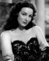

El Cine en México
La cinematografía nacional ha vivido etapas gloriosas, destacando a nivel mundial por sus narrativas, directores e intérpretes icónicos que marcaron pauta en la industria. La Época de Oro del cine mexicano fue un periodo de esplendor creativo e industrial en el que México se convirtió en el epicentro de la producción cinematográfica de América Latina, definiendo la identidad cultural del país a través de géneros icónicos llenos de música, drama y comedia.
Grandes Filmaciones de la Época de Oro
| Película | Año | Actores Principales | Lugar de Filmación y Datos |
|---|---|---|---|
| Ahí está el detalle | 1940 | Mario Moreno "Cantinflas" Joaquín Pardavé Sara García |
|
| El gendarme desconocido | 1941 | Mario Moreno "Cantinflas" Mapy Cortés Daniel "Chino" Herrera |
|
| María Candelaria | 1943 | Dolores del Río Pedro Armendáriz |
|
| Enamorada | 1946 | María Félix Pedro Armendáriz |
|
| Nosotros los Pobres | 1947 | Pedro Infante Blanca Estela Pavón |
|
| Los Olvidados | 1950 | Alfonso Mejía Roberto Cobo Stella Inda |
|
Actores Reconocidos

Pedro Infante
Cantinflas

María Félix
Dolores del Río